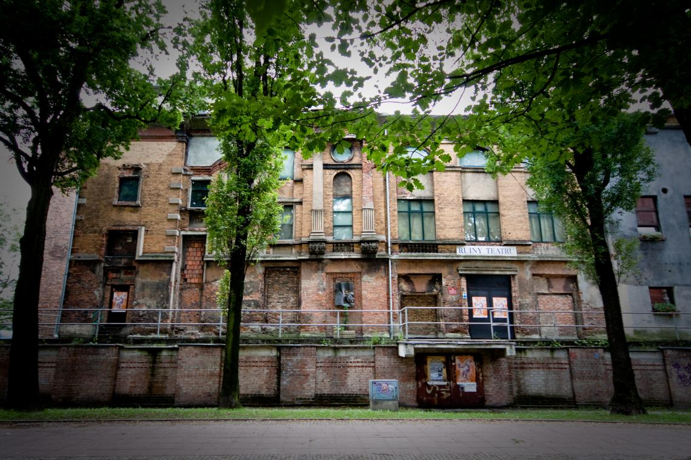
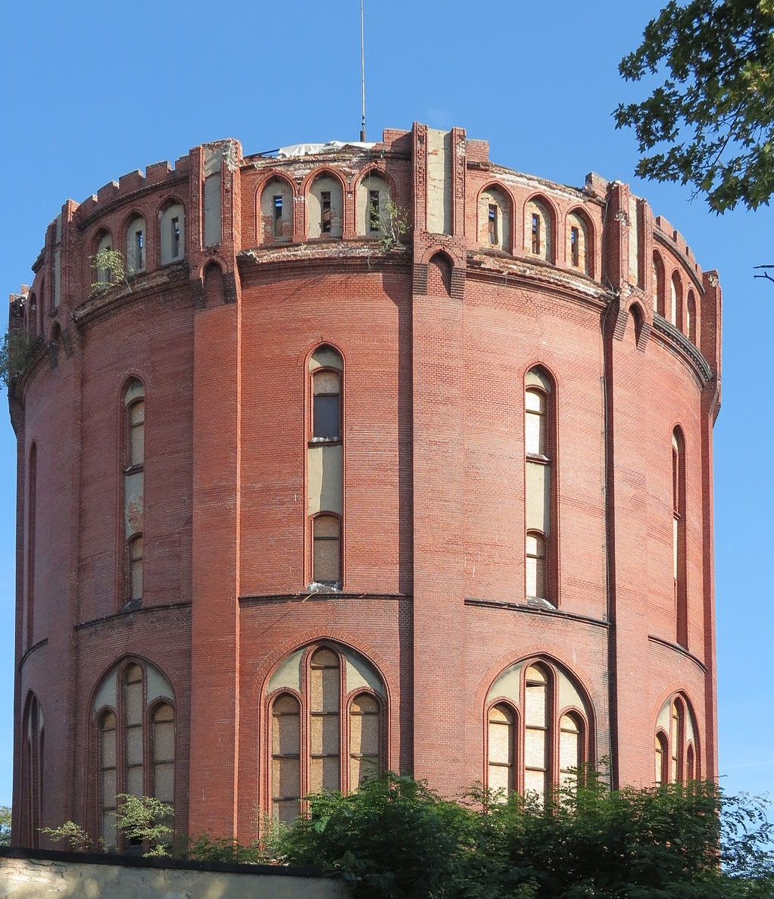

Ruiny teatru Victoria
W 1890 roku zbudowano w tym miejscu olbrzymi kompleks kulturalno-rozrywkowy. Na jego terenie działał również Teatr Miejski Victoria. Był to największy i najbardziej reprezentacyjny obiekt tego typu na Górnym Śląsku. W 1945 roku został spalony przez żołnierzy radzieckich. Obecnie, utrzymywany jako stała ruina, jest jednym z najciekawszych obiektów kulturalnych w regionie i służy prezentowaniu niestandardowych przedsięwzięć artystycznych. Mieści około 300 widzów. Jest częścią Teatru Miejskiego w Gliwicach.
Zabytkowa wieża ciśnień
Wieża ciśnień zbudowana w latach 1905–1908 na wzgórzu, ponieważ musiała być położona wyżej od istniejącej już wieży przy ul. Poniatowskiego, którą wspomagała w dostarczaniu wody do południowych dzielnic Gliwic. W niektórych źródłach jest podawana data budowy 1918, ale według konserwatora zabytków Ewy Pokorskiej, bardziej prawdopodobne jest datowanie powstania wieży na lata 1905–1908. Wysoka na 50 metrów budynek ma kształt walca o średnicy 26 m. Projektantem wieży był Wilhelm Adalbert Otto Kranz.
